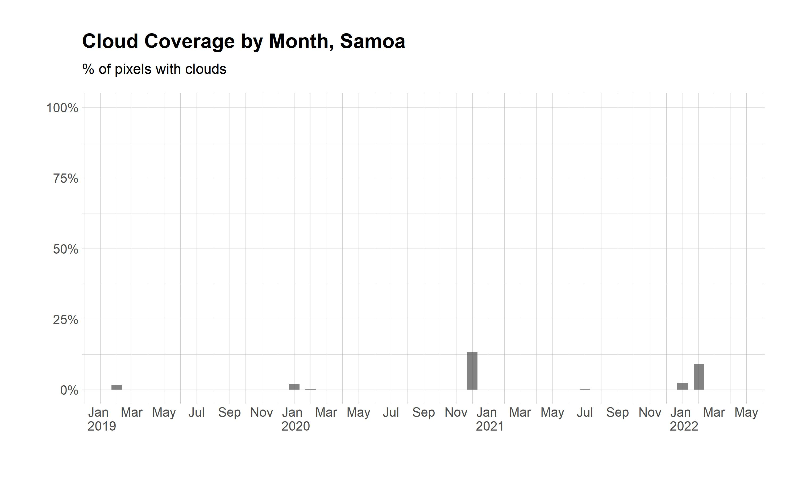

Data Quality Assessment
Contents
Data Quality Assessment#
Luminosity Values#
This first set of figures presents nighttime lights composites from 2021 for the Pacific Islands, generated through Google Earth Engine by averaging non-cloudy observations.


Cloud Coverage by Country#
This second set of figures examines the number of pixels that contain invalid light measurements due to clouds.


